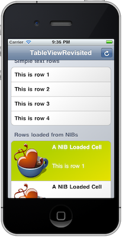

Please note: this article is part of the older "Objective-C era" on Cocoa with Love. I don't keep these articles up-to-date; please be wary of broken code or potentially out-of-date information. Read "A new era for Cocoa with Love" for more.
UITableView construction, drawing and management (revisited)
In this post, I'll show you the current classes I use to construct and manage UITableViews in a number of different projects. This code is an amalgamation and evolution of some ideas that I've presented in a few earlier posts including my posts on heterogenous cells in a table view and easy custom table view drawing. But this implementation also chooses to do some things differently in an effort to continuously simplify the task of creating customized tables and views in iOS.
Introduction
In this post, I present a the following sample application.
Download the Xcode project for the sample application: TableDesignRevisited.zip (65kB)
The application contains a top-level table view with 3 sections. Each section in this table view contains a different kind of row, with different construction, drawing and behaviors. The "Simple text" rows display text and are selectable but then simply deselect with no further action. The "Rows loaded from NIBs", when tapped, push in a "Detail View Controller". The "Editable Text Fields" section contains rows you can tap to edit.
The purpose of this sample class is to demonstrate the approach and implementation that I use for structuring views and controllers in a basic iOS application containing these types of elements.
This post is a reply to the handful of different readers who have read some of my earlier posts on techniques and practices involving UITableView and UITableViewController and asked if my approaches have changed at all in the last couple years.
Key features of the sample application
The application's use of table views and cells demonstrates numerous, highly advantageous features:
- heterogeneous (i.e. different kinds of) views in a single table without needing conditional code to separate their behaviors
- fully custom drawn headers, rows and backgrounds — I realize the rows in this sample application may look very similar to Apple's normal
UITableViewCells in a groupedUITableViewbut if you look close, you'll notice the background of the cells is a subtle left-to-right gradient and the tables background is a subtle gradient instead of the standard table texture (and the selection color is totally different). All custom drawing can be easily modified or tweaked to make the application look novel and distinctive or it can be disabled to revert to the default drawing code. - all default row and header drawing can handle either "grouped" or "plain" UITableView styles (so you're not locked into one aesthetic)
- fully animated insertion and removal of all table view cells
- the app demonstrates view and cells constructed both in code and loaded from NIB files and makes the code path for loading tables and cells from NIBs fast and easy
- the table is managed by a custom
UIViewController, not aUITableViewController. This means that it avoids theUITableViewControllerlimitation of only managing theUITableView— you can load additional views as part of the hierarchy - view scrolling to avoid text under the keyboard (which is the biggest advantage of
UITableViewController) is handled by the customUIViewControllerso thisUITableViewControllerfunctionality is retained
Evolution over time
Some of these features were part of previous posts that I've written, including:
- Heterogeneous cells in a
UITableViewController - Recreating
UITableViewControllerto increase code reuse - Easy custom
UITableViewdrawing
The code in this post is probably closest to being a descendant of the original "Heterogeneous cells" post. Many of the ideas for simplifying the UITableViewController implementation remain from that post.
Specifically, the "Heterogeneous cells" aim of handling the UITableView data source and delegate methods automatically in a base class carries through into this code. The approach from "Easy custom UITableView drawing" of customizing cell drawing by setting the subviews — not by putting drawing code into UITableViewCell — is also followed here.
However, there are some changes in style and approach.
Reduced construction of views in code
Except for the simplest views, I rarely construct views in code anymore, in favor of loading most views from NIB files.
I originally kept to NIB files because I felt that Interface Builder for iOS 2 lacked features and that precise configuration required setup in code anyway. There were also performance concerns early on which turned out not to be accurate. If you remember: there is rarely any speed advantage to construction in code and it's generally ugly to read and hard to maintain.
So the arguments against NIB files turned out to be inaccurate or out-of-date and all that was required was code that allowed seamless use of NIB files for loading.
While loading NIBs for UIViewControllers is part of the standard API, it is a little less clear-cut with UITableViewCells. I use an approach where only the content view of the UITableViewCell is typically loaded from a NIB — and it's as simple as overriding the -nibName method.
No easy path for loading table section headers from NIB files exists in these classes but customized table headers are rare enough that I don't think that's important.
Elimination of the dedicated Cell Controller class
The Cell Controller class originally existed for the purpose of binding a controller directly to the data for a row and keeping control separate from the UITableViewCell which is a view by inheritance.
The Cell Controller was a key feature of the a Heterogeneous cells in a UITableViewController post but frankly, it didn't integrate well with the classes around it. Additionally, connecting target/actions from subviews of a UITableViewCell to the Cell Controller could also cause minor problems in some cases.
Instead, I've chosen to embrace the idea that UITableViewCell is really a controller (despite inheriting from UIView) and putting most of the cell control code there. Associated with this, I don't use the UITableViewCell for any drawing (that is done by the content view, background view and selected background view). The UITableViewCell is just the controller that loads these other views and connects them to the data.
Eliminating the Cell Controller class had an additional advantage: greater decoupling of the row's data and the controller (which is now the UITableViewCell subclass). Row data is stored along with a pointer to the desired subclass of UITableViewCell but the connection between the two is only made when the cell is prepared for display. Until that point, the row data is not directly connected to any view controller; a much better approach that works within the UITableView/UITableViewCell architecture.
Fully animated, rarely using reloadData
An additional problem with the original Heterogeneous cells implementation was that it required all the data and cell controllers for the table to be fully constructed, then -[UITableView reloadData] was called to recreate the whole table in the new state.
The new implementation is focussed on animating rows and sections into and out of the table and the methods for manipulating the rows and sections all focus on this.
Of course, it is possible to pass UITableViewRowAnimationNone for the animations and this then requires that you do subsequently call reloadData, so the old approach is still possible.
Forgiving approach to row and section indices
The methods for manipulating row and sections in this implementation will attempt to fix row indices or create missing sections if you mess up. The intention is not to encourage laziness but rather to be forgiving if a bug slips through. It's better to have a row appear in the wrong section of the table than to have the whole program crash due to an index out-of-bounds issue.
The implementation and how to use it
Code in the view controller
The RootViewController is the controller for the main screen (as shown in the screenshot above).
The rows in this view are all constructed in a similar way (with different cell classes for each section and different data for each row). Here's how the rows in the "Rows loaded from NIBs" section are constructed:
[self addSectionAtIndex:1 withAnimation:UITableViewRowAnimationFade];
for (NSInteger i = 0; i < 4; i++)
{
[self
appendRowToSection:1
cellClass:[NibLoadedCell class]
cellData:[NSString stringWithFormat:
NSLocalizedString(@"This is row %ld", @""), i + 1]
withAnimation:(i % 2) == 0 ?
UITableViewRowAnimationLeft :
UITableViewRowAnimationRight];
}The view for the row is configured in this single statement. You specify:
- the data
- the Class that will be used to control and display the data when it comes into view
- the location of the row within the section/row hierarchy
- the animation used to bring the cell into view
Obviously, the "data" used here is fairly simple: just NSString and NSDictionary instances. In a real program, you would pass your Model objects for each row as the cellData parameter.
As with the original "Heterogeneous cells" post, there is no additional work required in the view controller once this declarative work is done; the UITableViewDataSource and UITableViewDelegate implementations are all handled automatically.
Animation is not required; you can specify UITableViewRowAnimationNone and then follow the insertion with a call to -[UITableView reloadData] or -[UITableView reloadSections:withRowAnimation:] when you're ready for the table to refresh.
Code in the table view cell subclasses
The implementation for each row is intended to be as hassle-free as possible too. The implementation of the NibLoadedCell, which is totally custom drawn, custom layout, custom row height and custom action is three, tiny methods long:
+ (NSString *)nibName
{
return @"NibCell";
}
- (void)handleSelectionInTableView:(UITableView *)aTableView
{
[super handleSelectionInTableView:aTableView];
NSInteger rowIndex = [self indexPath].row;
[((PageViewController *)aTableView.delegate).navigationController
pushViewController:
[[[DetailViewController alloc] initWithRowIndex:rowIndex] autorelease]
animated:YES];
}
- (void)configureForData:(id)dataObject
tableView:(UITableView *)aTableView
indexPath:(NSIndexPath *)anIndexPath
{
[super configureForData:dataObject tableView:aTableView indexPath:anIndexPath];
label.text = dataObject;
}Following in the tradition of making the common case the easiest, all you need to do is set the -nibName and the default implementation knows how to load the nib and set a range of properties including the default row height based on the size of the view in the NIB file.
Common behaviors like deselecting the row after selection are automatically handled by the super implementation of handleSelectionInTableView: and the default implementation of configureForData:tableView:indexPath: handles the setting of the custom row background and selection background.
Flexibility
The architecture allows you to do things different depending on how you want to work.
As an example: the LabelCell and TextFieldCell are constructed in code in their finishConstruction implementations but the NibLoadedCell is loaded from a NIB by overriding the -nibName method and returning the name of its NIB file. Similarly, the RootViewController's table is constructed in code by overriding the -loadView method but the DetailViewController comes from a NIB file simply by overriding the -nibName method and returning the name of its NIB file.
The rows use the PageCellBackground for drawing by invoking the super implementation in configureForData:tableView:indexPath:. You can easily avoid invoking the super implementation here to revert to standard UITableViewCell drawing.
Want the default UITableView headers instead of custom drawn ones? Remove the self.useCustomHeaders = YES; line from the -viewDidLoad method in RootViewController.
The custom drawn views will all draw themselves in the UITableViewStyleGrouped or UITableViewStylePlain styles. You can see the difference by changing the style of the created table in the loadView method of RootViewController.
How it works
None of the code is hugely groundbreaking in any way. Most of the code simply works because of the default behaviors in the base classes:
- PageViewController — handles (almost) all data source and delegate methods. If you make this view controller the delegate for any UITextField in the table, it will also handle scrolling of the table and resizing of the view to keep the text field out from underneath the onscreen keyboard.
- PageCell — loads the
contentViewfor theUITableViewCellfrom a NIB file (if specified). In addition or as an alternative, you can configure or construct thecontentViewin thefinishConstructionmethod. This method also provides thePageViewControllerwith information about row including the row height (which can be extracted from the NIB). Other methods include an overrideable set of methods for handling the configuration of the view (used to connect the view and data or otherwise prepare the view for display) and handling touches in the view. - PageCellBackground — draws a custom cell background in either
UITableViewStylePlainorUITableViewStyleGroupstyles. ThePageCellBackgroundis applied in thePageCell'sconfigureForData:tableView:indexPath:default implementation (so you can disable it by subclassing this method and not invoking the super implementation). Alternately, if you just want to change the aesthetic of the cell background, you can change the subclass ofPageCellBackgroundused by overriding the+[PageCell pageCellBackgroundClass]method.
Missing features or situations this won't handle
Different structures for the row data
As I mentioned in the original "Heterogeneous cells" post, the approach used in this implementation offers simplification over the default UITableViewController templates because it makes some assumptions about the structure of your data. Specifically, it assumes that the data for every row in the table is loaded and a PageCellDescription constructed for each row's data.
The downside is that the current implementation would not integrate in its current form with any design that requires the data be store or structure in a different way. An example of a different storage arrangement is data fetched using a NSFetchedResultsController — you'd need a base class that works differently to integrate with NSFetchedResultsController's different approach to loading and caching data.
Declarative handling of sections
As I've mentioned a couple times, the current PageViewController only handles almost all of the data source and delegate methods for the UITableView. The biggest omission is any handling of the section headers — setting the text for the section headers still requires implementing the tableView:titleForHeaderInSection:.
Looking at the code, you could possibly make some minor improvements by handling the sections as a description data structure (in the same way that each rows is described by a PageViewCellDescription instance). This would allow you to bind the section's title, header and footer view and other section attributes together when you add the section to the table.
The actual simplification this would bring is likely minor though, so I haven't bothered yet.
Customized for your own program
While the default behaviors in the PageViewController, PageCell and PageCellBackground view will work as they are, their purpose is to allow simple customization in your own program.
Distinctive classes in your program should have their distinctive traits applied in subclasses but for defaults you want to establish across your entire program, it's often easiest to insert custom behaviors like custom drawing directly into PageCellBackground or -[PageViewController tableView:viewForHeaderInSection:]. There's no need to keep these defaults if your program never uses them.
Conclusion
Download the Xcode project for the sample application: TableDesignRevisited.zip (65kB)
The code in this post is not particularly advanced — most regular iOS programmers could easily figure it out for themselves.
Instead, this post is just a basic reveal of how I structure my views in some of my own programs so that new developers can get ideas about how they should structure their own tables, views and controllers for basic user-interface management in iOS.
This code represents 2 years of iteration since some of the earlier posts I've written on UITableViews and their management. Maybe there's an opportunity to learn from this evolution or maybe there's an opportunity to learn from my earlier naïvity and newer eccentricities. I'm certainly happy with how my approach has evolved and I think the current state of these classes represents a base from which you can very quickly implement new table-based views using much less code than starting from Apple's Xcode templates.
Version control for solo Mac developers
Submitting functionality for a future version of iOS